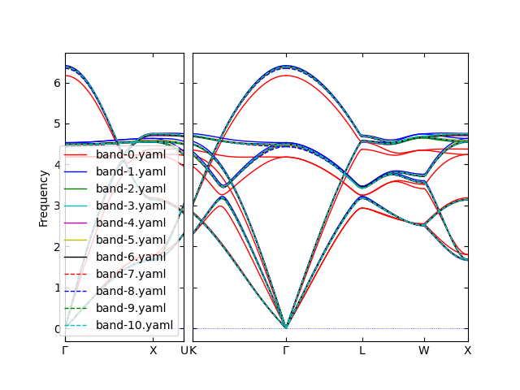

Temperature dependent force constants calculation using pypolymlp and symfc#
Warning
This is an experimental feature. The command-line options, the layout of
sscha_free_energies.yaml, and the phonopy.sscha API may change in a
backward-incompatible way between releases, without a deprecation period.
Force constants that depend on temperature are calculated here within the stochastic self-consistent harmonic approximation (SSCHA). They are determined self-consistently from supercells whose atoms are displaced randomly, the displacements being drawn from the canonical ensemble of the force constants themselves at the temperature. About SSCHA, please refer to the papers by L. Monacelli et al., J. Phys.: Condens. Matter 33 363001 (2021) and A. van Roekeghem et al., Comput. Phys. Commun. 263 107945 (2021). Technically, the computational procedure introduced here is equivalent to the approach of the latter paper.
Every iteration needs the forces of many supercells, which is what makes a
direct first-principles calculation expensive. Two codes make it affordable.
With the --pypolymlp option, phonopy interfaces with the polynomial machine
learning potential (MLP) code
pypolymlp, which is trained once on a
dataset of supercell displacements, forces and energies, and then evaluates the
forces of the sampled supercells in place of the calculator.
symfc, a dependency of phonopy that is
installed together with it, fits the force constants to those displacements and
forces using a symmetry-adapted basis.
For further details on combining phonopy calculations with pypolymlp, refer to
A. Togo and A. Seko, J. Chem. Phys. 160, 211001 (2024)
[doi]
[arxiv]. The example used in this page is
found at example/KCl-SSCHA.
Requirements#
pypolymlp >= 0.10.0
For linux (x86-64), a compiled package of pypolymlp can be installed via conda-forge (recommended). Otherwise, pypolymlp can be installed from source-code.
How to calculate#
Workflow#
Generate random displacements in supercells. Use –rd option.
Calculate corresponding forces and energies in supercells. Use of VASP interface is recommended for –sp option is supported.
Prepare dataset composed of displacements, forces, and energies in supercells. The dataset must be stored in a phonopy-yaml-like file, e.g.,
phonopy_params.yaml. Use -f and –sp option simultaneously.Develop MLPs. By default, 90 and 10 percents of the dataset are used for the training and test, respectively. At this step
polymlp.yamlis saved.Generate random displacements in supercells
Evaluate MLPs for forces of the supercells generated in step 5.
Calculate force constants from displacement-force dataset from steps 5 and 6.
Temperature dependent force constants calculation
The steps 4-7 are executed in running phonopy with --pypolymlp
option.
Steps 1-3: Dataset preparation#
For the training, the following supercell data are required in the phonopy setting to use pypolymlp:
Displacements
Forces
Total energies
These data must be stored in phonopy.yaml-like file.
The supercells with displacements are generated by
% phonopy-init --rd 120 -c POSCAR-unitcell --dim 2 2 2 --amin 0.03 --amax 1.5
_
_ __ | |__ ___ _ __ ___ _ __ _ _
| '_ \| '_ \ / _ \| '_ \ / _ \ | '_ \| | | |
| |_) | | | | (_) | | | | (_) || |_) | |_| |
| .__/|_| |_|\___/|_| |_|\___(_) .__/ \__, |
|_| |_| |___/
4.4.1.dev57
-------------------------[time 2026-08-01 12:14:37]-------------------------
Rust backend (phonors) using rayon (10 threads).
Python version 3.13.11
Spglib version 2.7.0
Crystal structure was read from "POSCAR-unitcell".
Unit of length: angstrom
Displacements creation mode
Random displacements
Number of supercells with random displacements: 120
Min displacement distance: 0.03
Max displacement distance: 1.5
Settings:
Supercell: [2 2 2]
Primitive matrix:
[0. 0.5 0.5]
[0.5 0. 0.5]
[0.5 0.5 0. ]
Spacegroup: Fm-3m (225)
Number of symmetry operations in supercell: 1536
Use -v option to watch primitive cell, unit cell, and supercell structures.
Generated number of supercells: 120
"phonopy_disp.yaml" and supercells have been created.
Summary of calculation was written in "phonopy_disp.yaml".
-------------------------[time 2026-08-01 12:14:37]-------------------------
_
___ _ __ __| |
/ _ \ '_ \ / _` |
| __/ | | | (_| |
\___|_| |_|\__,_|
Choosing --amin and --amax#
--amax sets the largest displacement distance in the training set. Its right
value is a property of the system and of the highest temperature to be studied,
so the 1.5 above is a value for this system rather than a default to carry
over to another one. Too large a value costs nothing in the number of
structures but dilutes the set: the potential spends its capacity on strongly
repulsive structures that are never visited, and its relative force error grows
where the calculation actually runs.
If harmonic force constants are at hand, from a preliminary finite-displacement calculation for instance, the range to cover can be measured instead of guessed. Sample the canonical ensemble at the highest temperature of interest and read the percentiles of the displacement magnitudes:
import numpy as np
import phonopy
ph = phonopy.load("phonopy_params.yaml")
ph.generate_displacements(number_of_snapshots=10000, temperature=300)
u = np.linalg.norm(ph.displacements, axis=2)
print(f"mean {u.mean():.3f} p99 {np.percentile(u, 99):.3f} "
f"p99.9 {np.percentile(u, 99.9):.3f} max {u.max():.3f}")
For the KCl of this example at 300 K this gives mean 0.244, p99 0.515, p99.9
0.618 and max 0.814 Angstrom, so the --amax 1.5 above covers the sampled
range with room to spare, and still does at 500 K, where the maximum is 1.047
Angstrom. Some margin is wanted, because the self-consistent SSCHA distribution
has wider tails than the harmonic one sampled here. --amin starts the range
below the zero-point amplitude, for which 0.03 Angstrom is a reasonable
default.
How the distance is drawn can be chosen as well. By default one distance is
drawn per supercell and shared by all of its atoms, so each supercell is a
shell of a single amplitude, and the weight that piles up at --amin reserves
a share of wholly near-equilibrium supercells. --amax-per-atom draws it
independently for every atom, uniformly over [--amin, --amax) and with no
weight at the floor, so every supercell spans the whole amplitude range
internally. The latter puts many amplitudes into each supercell, which is worth
considering when the number of structures is limited by the cost of the
reference calculations.
For the generated supercells, forces and energies are calculated. Here it is assumed to use the VASP code. Once the calculations are complete, the data (forces and energies) can be extracted using the following command:
% phonopy-init --sp -f vasprun_xmls/vasprun-{001..120}.xml
This command extracts the necessary data and stores it in the
phonopy_params.yaml file. For more details, refer to the description of the
–sp option. Currently, supercell energy extraction
from calculator outputs is only supported when using the VASP interface.
Step 4: Develop MLPs#
Having phonopy_params.yaml, phonopy is executed with --pypolymlp option,
% phonopy phonopy_mlpsscha_params_KCl-120.yaml.xz --pypolymlp --mlp-params="ntrain=100, ntest=20" -v
_
_ __ | |__ ___ _ __ ___ _ __ _ _
| '_ \| '_ \ / _ \| '_ \ / _ \ | '_ \| | | |
| |_) | | | | (_) | | | | (_) || |_) | |_| |
| .__/|_| |_|\___/|_| |_|\___(_) .__/ \__, |
|_| |_| |___/
4.4.1.dev57
-------------------------[time 2026-08-01 12:30:48]-------------------------
Rust backend (phonors) using rayon (10 threads).
Running in phonopy.load mode.
Python version 3.13.11
Spglib version 2.7.0
Crystal structure was read from "phonopy_mlpsscha_params_KCl-120.yaml.xz".
Unit of length: angstrom
Settings:
Supercell: [2 2 2]
Primitive matrix:
[0. 0.5 0.5]
[0.5 0. 0.5]
[0.5 0.5 0. ]
Spacegroup: Fm-3m (225)
Number of symmetry operations in supercell: 1536
(Crystal structures are omitted here.)
NAC parameters were read from "phonopy_mlpsscha_params_KCl-120.yaml.xz".
(Dielectric constant and Born effective charges are omitted here.)
Displacement-force dataset was read from "phonopy_mlpsscha_params_KCl-120.yaml.xz".
----------------------------- pypolymlp start ------------------------------
Pypolymlp version 0.20.4.post0
Pypolymlp is a generator of polynomial machine learning potentials.
Please cite the paper: A. Seko, J. Appl. Phys. 133, 011101 (2023).
Pypolymlp is developed at https://github.com/sekocha/pypolymlp.
Parameters:
cutoff: 8.0
model_type: 3
max_p: 2
gtinv_order: 3
gtinv_maxl: (8, 8)
gaussian_params1: (1.0, 1.0, 1)
gaussian_params2: (0.0, 7.0, 10)
ntrain: 100
ntest: 20
Developing MLPs by pypolymlp...
n_features: 8283
Minimum memory required for Cholesky solver in GB: 1.1
Memory required for allocating X additionally.
----- Dataset: data1 -----
Structures: 100 / 100
Matrix shape (X): (19900,8283)
Required memory for X: 1.3187 (GB)
Estimated peak memory allocation (X.T @ X, X): 2.42 (GB)
Compute X.T @ X and X.T @ y
Regression: Use standard ridge solver.
Regression: cholesky decomposition.
- alpha: 0.001
Compute X.T @ X + alpha @ I
Solve linear equation
- alpha: 0.01
Compute X.T @ X + alpha @ I
Solve linear equation
- alpha: 0.1
Compute X.T @ X + alpha @ I
Solve linear equation
- alpha: 1.0
Compute X.T @ X + alpha @ I
Solve linear equation
- alpha: 10.0
Compute X.T @ X + alpha @ I
Solve linear equation
----- Dataset: data2 -----
Structures: 20 / 20
Matrix shape (X): (3980,8283)
Required memory for X: 0.26373 (GB)
Estimated peak memory allocation (X.T @ X, X): 1.36 (GB)
Compute X.T @ X and X.T @ y
Regression: model selection ...
- alpha = 1.000e-03 : rmse (train, test) = 0.02432 0.23669
- alpha = 1.000e-02 : rmse (train, test) = 0.03613 0.16766
- alpha = 1.000e-01 : rmse (train, test) = 0.07193 0.22140
- alpha = 1.000e+00 : rmse (train, test) = 0.11563 0.26042
- alpha = 1.000e+01 : rmse (train, test) = 0.19375 0.31767
prediction: train-data1
rmse_energy: 26.14364 (meV/atom)
rmse_force: 9.98259 (eV/ang)
mae_energy: 9.09094 (meV/atom)
mae_force: 0.60389 (eV/ang)
prediction: test-data2
rmse_energy: 40.23820 (meV/atom)
rmse_force: 2.15935 (eV/ang)
mae_energy: 17.99147 (meV/atom)
mae_force: 0.41367 (eV/ang)
MLPs were written into "polymlp.yaml"
------------------------------ pypolymlp end -------------------------------
Use --rd or -d option for running phonon calculations with pypolymlp.
Summary of calculation was written in "phonopy.yaml".
-------------------------[time 2026-08-01 12:31:51]-------------------------
_
___ _ __ __| |
/ _ \ '_ \ / _` |
| __/ | | | (_| |
\___|_| |_|\__,_|
Information about the development of MLPs using pypolymlp is provided between
the pypolymlp start and pypolymlp end sections. The -v option is
specified here to show the prediction errors of the developed MLPs. Those
reported for test-data2 are the errors for the test dataset, which was not
used for the training, and therefore indicate how accurately the MLPs predict
energies and forces of unseen supercells. The polynomial MLPs are saved in the
polymlp.yaml file. This file is automatically searched in subsequent phonopy
executions with the --pypolymlp option and reused.
Steps 5-8: Temperature dependent force constants calculation#
After the MLPs are developed, random displacements are generated with a
displacement distance of 0.01 Angstrom. The forces for these supercells are
then evaluated using pypolymlp. Both the generated displacements and the
corresponding forces are stored in the phonopy_mlp_eval_dataset.yaml file.
The calculated force constants may be referred as the harmonic force constants.
After the last step, the polymlp.yaml file exists in the current directory.
This file is read automatically in the next calculation with the --pypolymlp
option. If the developed MLPs can predict well forces at relatively large
displacements, temperature dependent force constants are calculated with the
--sscha NUMBER_OF_ITERATIONS option.
% phonopy phonopy_mlpsscha_params_KCl-120.yaml.xz --pypolymlp --sscha 10 --rd-temperature 300 --rd 1000
_
_ __ | |__ ___ _ __ ___ _ __ _ _
| '_ \| '_ \ / _ \| '_ \ / _ \ | '_ \| | | |
| |_) | | | | (_) | | | | (_) || |_) | |_| |
| .__/|_| |_|\___/|_| |_|\___(_) .__/ \__, |
|_| |_| |___/
4.4.1.dev57
-------------------------[time 2026-08-01 12:22:02]-------------------------
Rust backend (phonors) using rayon (10 threads).
Running in phonopy.load mode.
Python version 3.13.11
Spglib version 2.7.0
Crystal structure was read from "phonopy_mlpsscha_params_KCl-120.yaml.xz".
Unit of length: angstrom
Pypolymlp displacements creation mode
Random displacements
Number of supercells with random displacements: 1000
Temperatuere to generate random displacements: 300.0
Settings:
Supercell: [2 2 2]
Primitive matrix:
[0. 0.5 0.5]
[0.5 0. 0.5]
[0.5 0.5 0. ]
Spacegroup: Fm-3m (225)
Number of symmetry operations in supercell: 1536
Use -v option to watch primitive cell, unit cell, and supercell structures.
NAC parameters were read from "phonopy_mlpsscha_params_KCl-120.yaml.xz".
Displacement-force dataset was read from "phonopy_mlpsscha_params_KCl-120.yaml.xz".
----------------------------- pypolymlp start ------------------------------
Pypolymlp version 0.20.4.post0
Pypolymlp is a generator of polynomial machine learning potentials.
Please cite the paper: A. Seko, J. Appl. Phys. 133, 011101 (2023).
Pypolymlp is developed at https://github.com/sekocha/pypolymlp.
Load MLPs from "polymlp.yaml".
------------------------------ pypolymlp end -------------------------------
Generate random displacements
Displacement distance: 0.01
Plus-minus displacements: auto
Evaluate forces in 1000 supercells by pypolymlp
Dataset generated using MLPs was written in "phonopy_mlp_eval_dataset.yaml".
Type-II dataset was found. Symfc is used as force constants calculator.
-------------------------------- Symfc start -------------------------------
Symfc version 1.7.1 (https://github.com/symfc/symfc)
Citation: A. Seko and A. Togo, Phys. Rev. B, 110, 214302 (2024)
Computing [2] order force constants.
Increase log-level to watch detailed symfc log.
--------------------------------- Symfc end --------------------------------
Max drift of force constants: -0.00000000 (yy) -0.00000000 (yy)
Max drift after symmetrization by symfc projector: -0.00000000 (yy) -0.00000000 (yy)
------------------------------- SSCHA start --------------------------------
Use provided force constants.
[ SSCHA iteration 1 / 10 ]
Generate 1000 supercells with displacements at 300.0 K
[0.006, 0.082] ****
[0.082, 0.157] *****************
[0.157, 0.232] ****************************
[0.232, 0.307] *************************
[0.307, 0.383] ****************
[0.383, 0.458] *******
[0.458, 0.533] **
[0.533, 0.608] *
[0.608, 0.684]
[0.684, 0.759]
Evaluate MLP to obtain forces using pypolymlp
Calculate force constants using symfc
SSCHA free energy: -98.489 +/- 0.093 meV
SSCHA force constants are written into "phonopy_sscha_fc_1.yaml.xz".
[ SSCHA iteration 2 / 10 ]
Generate 1000 supercells with displacements at 300.0 K
[0.003, 0.085] ****
[0.085, 0.166] ********************
[0.166, 0.247] ******************************
[0.247, 0.328] **************************
[0.328, 0.410] **************
[0.410, 0.491] *****
[0.491, 0.572] *
[0.572, 0.653]
[0.653, 0.734]
[0.734, 0.816]
Evaluate MLP to obtain forces using pypolymlp
Calculate force constants using symfc
SSCHA free energy: -98.213 +/- 0.072 meV
SSCHA force constants are written into "phonopy_sscha_fc_2.yaml.xz".
(Iterations 3 to 9 are omitted here.)
[ SSCHA iteration 10 / 10 ]
Generate 1000 supercells with displacements at 300.0 K
[0.005, 0.089] *****
[0.089, 0.173] **********************
[0.173, 0.257] *******************************
[0.257, 0.340] ************************
[0.340, 0.424] ************
[0.424, 0.508] ****
[0.508, 0.591] *
[0.591, 0.675]
[0.675, 0.759]
[0.759, 0.843]
Evaluate MLP to obtain forces using pypolymlp
Calculate force constants using symfc
SSCHA free energy: -98.297 +/- 0.073 meV
SSCHA force constants are written into "phonopy_sscha_fc_10.yaml.xz".
SSCHA free energies are written into "sscha_free_energies.yaml".
-------------------------------- SSCHA end ---------------------------------
----------------------------------------------------------------------------
No run mode was specified, so no phonon calculation was performed.
Specify one of the following to calculate phonons.
- Mesh sampling (MESH, --mesh)
- Q-points (QPOINTS, --qpoints)
- Band structure (BAND, --band)
- Animation (ANIME, --anime)
- Modulation (MODULATION, --modulation)
- Characters of Irreps (IRREPS, --irreps)
----------------------------------------------------------------------------
Summary of calculation was written in "phonopy.yaml".
-------------------------[time 2026-08-01 12:25:26]-------------------------
_
___ _ __ __| |
/ _ \ '_ \ / _` |
| __/ | | | (_| |
\___|_| |_|\__,_|
The final force constants are stored in files named
phonopy_sscha_fc_NUM.yaml.xz, where NUM represents the integer corresponding
to the iteration step. By performing a sufficient number of SSCHA iterations and
utilizing a sufficiently large set of supercells with random displacements at a
given temperature, the SSCHA force constants can be reliably determined.
Reusing harmonic force constants#
In the command above, --rd 1000 serves two different purposes: building the
harmonic force constants, and sampling the supercells of the SSCHA iterations.
The two need different numbers of supercells. The harmonic force constants are
already determined by relatively few supercells, whereas the SSCHA sampling
needs many of them to bring its statistical error down, so one number for both
spends supercells on the harmonic step that it does not need.
Force constants are read from the input when they are available, which separates the two. Writing them once,
% phonopy phonopy_mlpsscha_params_KCl-120.yaml.xz --pypolymlp --rd 20 --writefc
and running SSCHA afterwards in the same directory, where the FORCE_CONSTANTS
and polymlp.yaml files written by that command are found,
% phonopy phonopy_mlpsscha_params_KCl-120.yaml.xz --pypolymlp --sscha 10 --rd-temperature 300 --rd 1000
spends no supercells on the harmonic step, and --rd then sets the number of
SSCHA supercells alone. Reading force constants means that no training dataset
is loaded, so an MLP file such as the polymlp.yaml written by the first
command has to be available.
When harmonic force constants are not at hand, --rd auto estimates the number
of supercells needed to determine them, which is a cheaper starting point than
a number chosen for the SSCHA sampling.
SSCHA free energy#
The SSCHA free energy reported for each iteration is defined for the force constants \(\Phi\) by
where \(\tilde{F}_\Phi\) and \(\langle \tilde{V}_\Phi \rangle_{\tilde{\rho}_\Phi}\) are the harmonic Helmholtz free energy and potential energy of \(\Phi\), respectively, and \(\langle V \rangle_{\tilde{\rho}_\Phi}\) is the potential energy. The averages are taken over the harmonic density matrix \(\tilde{\rho}_\Phi\) at the temperature, which is sampled by the supercells with random displacements. \(\langle V \rangle_{\tilde{\rho}_\Phi}\) is obtained from the supercell energies evaluated by the MLPs relative to the energy of the supercell without displacements, and the harmonic potential energy is evaluated from the displacements as
These terms are given per primitive cell. The notation and the description used here are those of equations (B1) and (B3) in appendix B of A. Togo et al., J. Phys.: Condens. Matter 34, 365401 (2022) [doi], where it is also shown that evaluating \(\langle \tilde{V}_\Phi \rangle_{\tilde{\rho}_\Phi}\) from the displacements gives a more stable measure of the convergence than evaluating it from the phonon frequencies and eigenvectors.
Free energies of the iterations#
The free energies are collected in sscha_free_energies.yaml, which is rewritten
after every iteration and is written whether or not the log is enabled:
free_energy_unit: meV
iterations:
- iteration: 1
sampled_force_constants: null
produced_force_constants: "phonopy_sscha_fc_1.yaml.xz"
free_energy: -98.489246
free_energy_error: 0.093417
harmonic: -102.782014
anharmonic: 4.292768
Energies are per primitive cell. free_energy is the sum of harmonic and
anharmonic. With \(N\) sampled supercells, which is the number given by
--rd, the anharmonic part is the mean of
where \(E_i\) is the energy of the \(i\)-th supercell, \(E_0\) that of the supercell without displacements, \(u^{(i)}\) its displacements, and \(n_\mathrm{cell}\) the number of primitive cells in the supercell. The reported value and its error are then
where \(\mathrm{std}\) is the sample standard deviation,
free_energy_error is this \(\hat{\sigma}\): the harmonic part is fixed by
the force constants and carries no sampling noise, so the whole statistical
error comes from the anharmonic term. The file also records the settings the
values depend on: the
temperature, the number of snapshots, the sampling mesh used for the harmonic
part (--mesh, 100 by default), the random seed, and whether the iterations
started from given force constants.
The free energy of an iteration is that of the force constants the iteration sampled, not of the ones it produced from that sample. Only then do the harmonic part and the ensemble averaged for the anharmonic part belong to the same force constants, which is what makes the value the SSCHA free energy of those force constants. Each entry names both sets of force constants. The initialization step (iteration 0), run only when no force constants are given, has no free energy: its displacements are drawn at a fixed distance rather than from a canonical ensemble.
Convergence of the iterations#
The convergence of these force constants is monitored through the SSCHA free
energy reported for each iteration. The value after +/- is its statistical
error, which originates from the random sampling of the supercells and is
reduced by increasing the number of supercells given by the --rd option. The
iterations are regarded as converged when the free energies of the successive
iterations scatter within this error, because the remaining variation is then
indistinguishable from the sampling noise. In the log shown above, the free
energies of the ten iterations scatter by 0.081 meV, which is comparable to the
statistical error of 0.07 meV, and hence they are converged.
As an illustration, the phonon band structures corresponding to the SSCHA force constants at the iteration steps can be overlaid:
% phonopy phonopy_mlp_eval_dataset.yaml --band auto --band-points 101; mv band.yaml band-0.yaml
% for i in {1..10}; do phonopy phonopy_sscha_fc_$i.yaml.xz --band auto --band-points 101; mv band.yaml band-$i.yaml; done
% phonopy-bandplot band-{0..10}.yaml --legend
{kind=link}

band-0.yaml is the harmonic band structure, and the others are those of the
SSCHA iterations. The SSCHA band structures lie on top of each other, whereas
the harmonic one deviates from them, which shows that the SSCHA force constants
are converged and are distinct from the harmonic force constants.
Averaging the iterations#
The statistical error \(\hat{\sigma}\) of a single iteration grows with
temperature, because the anharmonic term is then averaged over a wider
distribution. For the KCl of this example, sampled with the 1000 supercells of
the command above, it is 0.019 meV at 100 K, 0.067 meV at 300 K and 0.152 meV
at 500 K per primitive cell. Within one iteration it falls as
\(1/\sqrt{N}\), so raising --rd is the only handle that iteration’s own
sampling offers.
The iterations themselves provide further samples of the same quantity. Each
value in sscha_free_energies.yaml is the SSCHA free energy of the force constants
that iteration sampled, so once the iterations reach the fixed point they are
estimates of the same free energy, differing only by their sampling noise. The
file holds one entry per iteration, as many as the number given by --sscha,
and the \(K\) of them that are past any transient may be averaged:
Whether this is legitimate has to be checked in the file rather than assumed, and the check is a comparison of two estimates of the error of \(\bar{\mathcal{F}}\),
with \(\mathrm{std}\) over the \(K\) values as defined above. The first assumes that nothing but the sampling of the supercells moves the free energy; the second measures how much it actually moved and assumes nothing. When the two agree, the iterations are stationary and independent, the average is worth \(1/\sqrt{K}\), and either expression may be quoted as its error. For the ten iterations of the run above they are 0.023 and 0.026 meV, against the 0.07 meV of a single iteration. When the second is the larger, something else is still moving: the force constants have not reached the fixed point, and the leading iterations are a transient that has to be dropped before averaging. The initialization step, which draws its displacements at a fixed distance rather than from a canonical ensemble, is already left out of the file for that reason.
example/KCl-SSCHA/sscha_average.py does this arithmetic for one or more
sscha_free_energies.yaml:
% python sscha_average.py sscha_free_energies.yaml
# free energies in meV per primitive cell
T(K) K mean reported scatter ratio file
300.0 10 -98.3180 0.0233 0.0257 1.10 sscha_free_energies.yaml
--skip drops leading iterations. Dropping the first one here lowers the ratio
from 1.10 to 0.81, which is that iteration showing in the scatter: it sampled
the harmonic force constants the run started from, not the SSCHA ones the rest
of the iterations converged to.
One consequence is worth stating, because it inverts a natural choice. At equal cost, more iterations with fewer supercells beat fewer iterations with more, since every iteration yields a usable sample: the ten iterations of 1000 supercells used above give ten samples and show the scatter, whereas five of 2000 would give five and hide it. Supplying harmonic force constants, which skips the initialization step, makes the first option cheaper still.
Free energy of saved force constants#
The SSCHA free energy is reported for every iteration, but it can also be
evaluated afterwards from a saved phonopy_sscha_fc_NUM.yaml.xz file. Since
this file contains force constants only, the anharmonic part is re-evaluated by
sampling displacements from the canonical ensemble of these force constants and
by evaluating the supercell energies using the MLPs in polymlp.yaml.
import phonopy
from phonopy.sscha.core import MLPSSCHA
ph = phonopy.load("phonopy_sscha_fc_10.yaml.xz", log_level=0)
ph.load_mlp("polymlp.yaml")
sscha = MLPSSCHA(
ph, ph.mlp, temperature=300.0, number_of_snapshots=1000, mesh=100.0
)
sscha.sample_supercells()
sscha.calculate_free_energy()
print(
f"SSCHA free energy: {sscha.free_energy * 1000:.3f} "
f"+/- {sscha.free_energy_error * 1000:.3f} meV"
)
mesh has to match the one of the run being compared with, the harmonic part
being sampled on it.
Since the value reported for an iteration is that of the force constants the
iteration sampled, the file to read here is the one written by the previous
iteration: this recipe applied to phonopy_sscha_fc_9.yaml.xz reproduces the
value reported for iteration 10. The two agree only within the statistical
error, being computed from different random samples. The force constants of the
last iteration are the one set with no reported value, and this is how their
free energy is obtained.
Parameters for developing MLPs#
A few parameters can be specified using the --mlp-params option for the
development of MLPs. The parameters are provided as a string, e.g.,
% phonopy phonopy_params.yaml --pypolymlp --mlp-params="ntrain=80, ntest=20"
Parameters are separated by commas for configuration. A brief explanation of the
available parameters can be found in the docstring of PypolymlpParams that is
found by
In [1]: from phonopy.interface.pypolymlp import PypolymlpParams
In [2]: help(PypolymlpParams)
ntrain and ntest are implemented in phonopy, while the remaining parameters
are directly passed to pypolymlp. Optimizing pypolymlp parameters can be
difficult, both in terms of achieving accuracy and managing the computational
resources required. The current default parameters are likely suitable for
systems up to ternary compounds. For binary systems, the calculations can
generally be run on standard laptop computers, but for ternary systems, around
40 GB of memory or more may be necessary.
For parameter adjustments, it is recommended to consult the pypolymlp documentation and review the relevant research papers.
ntrain and ntest#
This method provides a straightforward dataset split: the first ntrain
supercells from the list are used for training, while the last ntest
supercells are reserved for testing.
Convergence with respect to dataset size#
In general, increasing the amount of data improves the accuracy of representing
force constants. Therefore, it is recommended to check the convergence of the
target property with respect to the number of supercells in the training
dataset. The SSCHA free energy is convenient to monitor, since it is a single
number at each temperature and is recorded for every SSCHA iteration in
sscha_free_energies.yaml.
For example, by preparing an initial set with 100 supercell data, calculations can then be performed by varying the size of the training dataset while keeping the test dataset unchanged as follows:
% for n in 20 40 60 80 100; do
mkdir ntrain-$n
cd ntrain-$n
phonopy ../phonopy_params.yaml --pypolymlp --mlp-params="ntrain=$n, ntest=20" \
--sscha 10 --rd-temperature 300 --rd 1000
cd ..
done
% grep " free_energy:" ntrain-*/sscha_free_energies.yaml
Each calculation is performed in a separate directory. This is necessary because
an existing polymlp.yaml in the current directory is loaded and reused, by
which the ntrain setting would be silently ignored.
The SSCHA free energies are compared against the size of the training dataset to
observe the convergence. Since the SSCHA free energy fluctuates by the
stochastic sampling of random displacements, the comparison should be made using
the same number of supercells (--rd) and the values at the later iterations,
or their average as described above, which sharpens the comparison at no extra
cost. If it has not converged, an additional set of supercell data (e.g., forces and
energies in the next 100 supercells) will be computed and included. With this
procedure in mind, it may be convenient to generate a sufficiently large number
of supercells with random displacements in advance, such as 1000 supercells,
before starting the temperature dependent force constants calculation with
pypolymlp.
Converting phonopy.pmlp to polymlp.yaml#
In older versions, polynomial MLPs were stored in phonopy.pmlp. This file can
be converted to polymlp.yaml using the following Python snippet.
from pypolymlp.mlp_dev.pypolymlp import Pypolymlp
polymlp = Pypolymlp()
polymlp.convert_to_yaml(filename_txt="phonopy.pmlp", filename_yaml="polymlp.yaml")
How to cite#
This feature relies on pypolymlp and symfc. When it is used, please cite the papers of these codes, in addition to phonopy itself (Citation of phonopy).
pypolymlp#
“Tutorial: Systematic development of polynomial machine learning potentials for elemental and alloy systems”, A. Seko, J. Appl. Phys. 133, 011101 (2023) [doi].
@article{pypolymlp,
author = {Seko, Atsuto},
title = "{"Tutorial: Systematic development of polynomial machine learning potentials for elemental and alloy systems"}",
journal = {J. Appl. Phys.},
volume = {133},
number = {1},
pages = {011101},
year = {2023},
month = {01},
}
symfc#
“Projector-based efficient estimation of force constants”, A. Seko and A. Togo, Phys. Rev. B, 110, 214302 (2024) [doi] [arxiv].
@article{PhysRevB.110.214302,
title = {Projector-based efficient estimation of force constants},
author = {Seko, Atsuto and Togo, Atsushi},
journal = {Phys. Rev. B},
volume = {110},
issue = {21},
pages = {214302},
numpages = {18},
year = {2024},
month = {Dec},
}